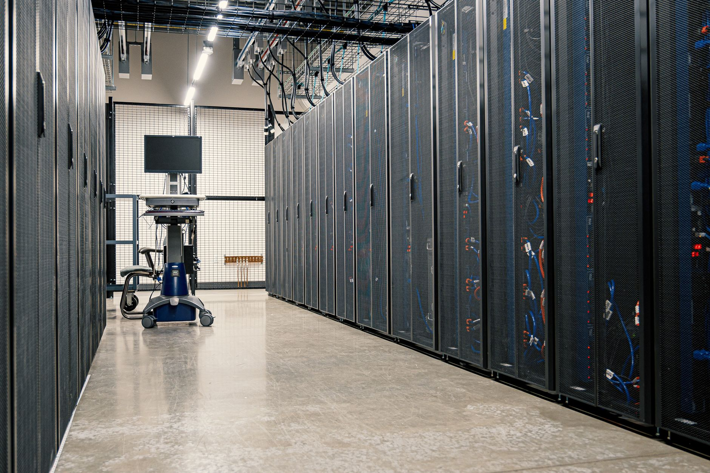

엔비디아 허가제 장기화, 韓 팹리스·소재 조달 전략 분기점

트럼프 행정부는 엔비디아·AMD AI 반도체의 제3국 수출에 미국 정부 사전 허가를 의무화하는 방안을 추진 중이다. 현재 추진 중인 규제안은 연산 능력 기준(FLOP 임계치)에 따라 3개 등급으로 국가를 분류하며, 한국은 동맹 1등급으로 분류되나 최종 규제 텍스트가 확정되지 않은 상태다.
한국 AI 반도체 생태계에서 핵심 변수는 HBM 소재다. SK하이닉스의 HBM3E가 엔비디아 H100·H200·GB200에 독점 공급되는 구조에서, 미국 수출 허가 지연이 발생하면 SK하이닉스 HBM 출하 일정에 직접 연동된다. 2025년 SK하이닉스 HBM 매출 비중은 전체 D램의 약 40%로 추정된다.
팹리스 기업 관점에서 문제는 IP 라이선스 구조다. 퀄컴·ARM 기반 설계를 사용하는 국내 팹리스사(텔레칩스·가온칩스 등)가 엔비디아 에코시스템과 연동된 AI 가속기 개발을 진행하는 경우, 미국 EAR(Export Administration Regulations) 하에서 기술 이전 허가가 별도로 필요해질 수 있다.
현재 한국은 미국 AI 반도체 최대 수입국 중 하나로, 2024년 기준 대한(對韓) 엔비디아 A100/H100 공급량이 전체 비중국 시장의 8~10%를 차지한다. AI 데이터센터 투자 급증(2025~2026년 네이버·KT·SKT·LG CNS 합산 4조 원+)에 따른 칩 수요 증가 시점에 허가제 도입이 겹칠 경우, 시설 투자 일정이 6~12개월 지연될 위험이 있다.
이 허가제의 실질적 의미는 '통관세'가 아니라 '정보 제출 의무'다. 미국 상무부 BIS에 최종 수요자·용도·재수출 여부를 신고해야 하는 구조가 되면, 한국 AI 서버 운영사들은 고객사 정보와 데이터센터 가동 목적을 미국 당국에 공개해야 할 수 있다. 이것이 기업의 숨겨진 거래 비용이다.
소재 공급망 관점에서 허가제 장기화는 '소재 국산화 가속'의 역설적 동인이 된다. 미국 칩을 적게 쓰는 방향으로 자국 AI 칩 개발을 서두를수록(삼성전자 Mach-1, 네이버 HyperCLOVA 칩셋 계획), 국내 칩 제조에 필요한 소재(갈륨 기반 화합물 반도체, 포토마스크 소재, 고순도 에칭 가스)의 국산화 수요가 동반 증가한다.
삼성전자 파운드리는 미국 허가 지연 리스크를 회피하려는 고객사들이 엔비디아 GPU 대신 자체 AI 가속기(ASIC) 설계를 늘릴 경우 파운드리 수주 증가로 수혜를 입는다. 실제로 아마존·구글·마이크로소프트 등 하이퍼스케일러들이 자체 AI 칩 설계를 2025년 이후 가속하고 있다.
리걸테크·무역 컴플라이언스 서비스 기업들이 수혜다. EAR 허가 신청 대행·문서화 서비스 수요가 급증할 것이며, 국내에선 관세법인·특허법인이 이 시장에 진입을 시작했다.
한국 중소 AI 스타트업과 데이터센터 운영사가 타격을 입는다. 대기업과 달리 BIS 허가 신청 전담 인력이 없어, 허가 프로세스를 외부에 위탁할 경우 건당 비용이 수천만 원에 달한다. 초기 스타트업이 GPU 확보에 행정 병목을 겪는 구조가 생긴다.
엔비디아 GPU를 재판매·임대하는 국내 클라우드 GPU 임대 스타트업(럼버잭·스케일AI 파트너사 등)이 재고 확보에 제약을 받는다. 선매입 물량을 늘려놓으려 해도 허가 절차가 물량 확보 타이밍을 통제하기 때문이다.
AI 인프라 투자 계획이 있는 기업은 올해 안에 BIS 규정 전담 인력 또는 외부 컴플라이언스 파트너를 지정해야 한다. 허가 신청은 평균 45~90일이 소요되며, 데이터센터 착공 일정에서 역산해 최소 6개월 전에 허가 프로세스를 시작해야 납기 차질이 없다.
팹리스사는 현재 개발 중인 AI 가속기의 기술 스택에서 미국 EAR 통제 품목(미국산 EDA 툴, 미국산 IP코어 포함 여부)을 전수 검토해야 한다. 특히 ARM v9 아키텍처 기반 설계는 ARM의 미국 법인 계약 구조에 따라 EAR 적용 가능성이 있다.
실제 조달 현장에서는 — 엔비디아 H100/H200 물량을 선점하려는 국내 데이터센터 운영사들이 싱가포르·UAE 법인을 통한 우회 구매를 타진하고 있다. 그러나 BIS는 재수출 경유지를 추적하는 'Red Flag' 점검 기준을 2024년 이후 대폭 강화했다 — 이 루트는 단기 효과는 있어도 장기적으로 더 큰 규제 리스크를 초래한다. 정공법으로 직접 신청하는 것이 현명하다.
이 포스팅은 쿠팡 파트너스 활동의 일환으로 수수료를 제공받습니다.